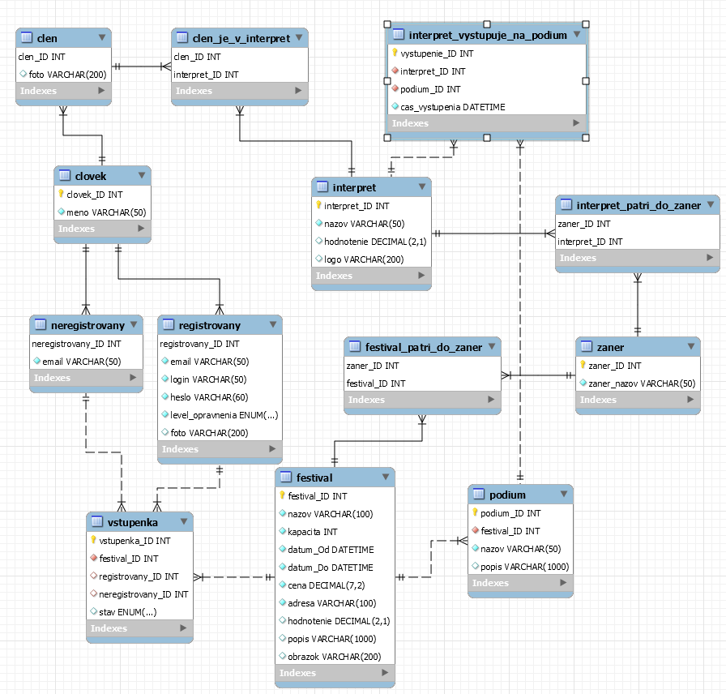

1. Festival: rezervace vstupenek na hudební festivaly
- Autoři
- První jméno
xnosko05@stud.fit.vutbr.cz -
Front-end, výpomoc s backendom
- Druhé jméno
xpalko08@stud.fit.vutbr.cz -
Databáza, výpomoc s backendom
- Třetí jméno
xsubap00@stud.fit.vutbr.cz -
Backend
- URL aplikace
- http://www.stud.fit.vutbr.cz/~xpalko08/
Uživatelé systému pro testování
Uveďte prosím existující zástupce všech rolí uživatelů.
| Login | Heslo | Role |
|---|
| admin | admin | Administrátor |
| poradatel | poradatel | Poradateľ |
| pokladni | pokladni | Pokladní |
| divak | divak | Divák |
(Diagram případů užití není nutné vkládat, pokud IS implementuje role a případy užití definované zadáním.)
Implementace
Stručná dokumentace k implementaci, která popisuje, které části projektu (např. PHP skripty) implementují jednotlivé případy použití.
Súbory začínajúce slovom class reprezentujú model aplikácie.
Administrátor:
- správa užívatelov - view/show_users.php, update_users.php, delete.php
Pořadatel
- správa festivalu - view/show_festivals.php, update_festivals.php, delete.php
- správa interpretov -view/show_interprets.php, update_interprets.php, delete.php
- pridanie člena interpreta - view/add_members.php, add_member.php
- vytvorenie festivalu - view/add_festival.php, festival_insert.php
- vytvorenie interpeta - view/add_artist.php, interpret_insert.php
- vytvorenie rozpisu - view/create_lineup.php, rozpis_insert.php
- přihlašuje interprety na festivaly - create_lineup.php
Pokladní:
- spravuje rezervace pro vybrané festivaly - view/show_tickets.php, change_stav.php.
Max. počet vstupeniek na festival na užívateľa je 10.
Divák:
- rezervuje vstupenky - cart.php, checkout.php, add_ticket_rezervation.php
- sleduje stav jeho rezervací - tickets.php
- editácia profilu - update_user.php, profile.php
Neregistrovaný návštěvník:
- vyhledává a prohlíží festivaly, interprety dle různých vlastností
- rezervácia bez registrácie - cart.php, checkout.php, add_ticket_rezervation.php
- registrácia - register.php
Databáze

Instalace
- Po extrakcii archívu je potrebné len priradiť potrebné oprávnenia. Na servery EVA je doporučené nasledovať pokyny na FAQ bod 13. Ak chcete hostovat databázu na vlastnom účte, je treba prepísať prihlasovacie údaje v skripte connect_db.php.
- Pre správny chod stránky sa vyžaduje PHP verzia 7.3. Verzia MySQL na servery EVA je dostačujúca. Inštalácia iných softwarov nie je potrebná.
- Inicializácia databázy prebieha cez phpMyAdmin na servery EVA. Pri využití vlastného účtu na servery EVA je potrebné prepísať v SQL skriptoch na prvom riadku názov databázy, aby sa zhodovala s vašim účtom. Databáza sa inicializuje skriptom create_tables.sql a testovacie dáta sa do nej vkladajú skriptom insert_mock_data.sql. Na dropnutie databázy sa použije skript drop_tables.sql.
Známé problémy
Ak sa zaregistruje neregistrovaný užívateľ, neukážu sa mu lístky zarezervované pred registráciou.
Nedajú sa aktualizovať žánre.